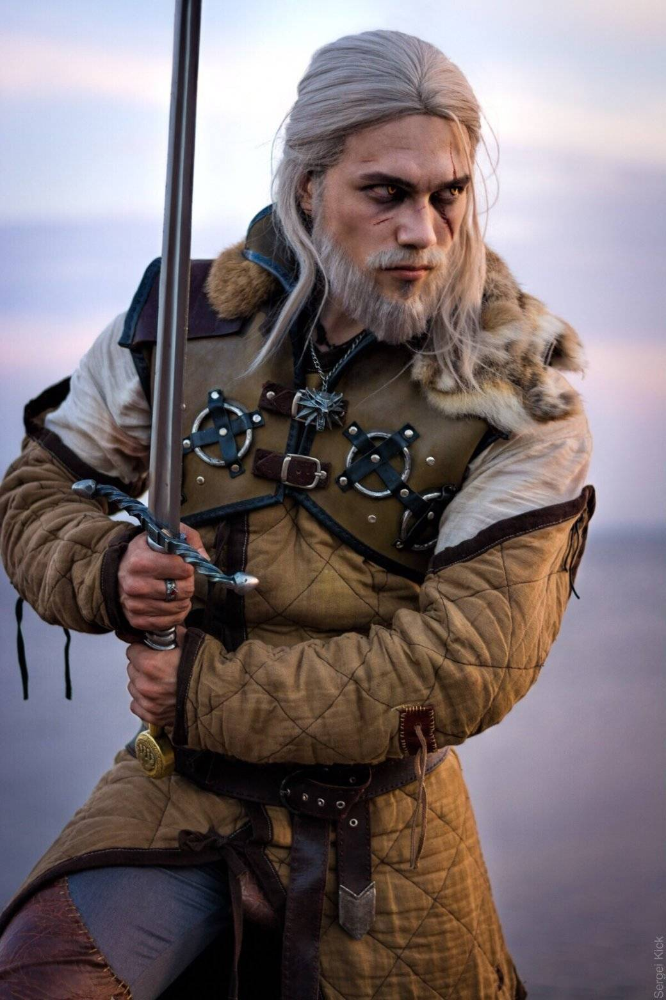
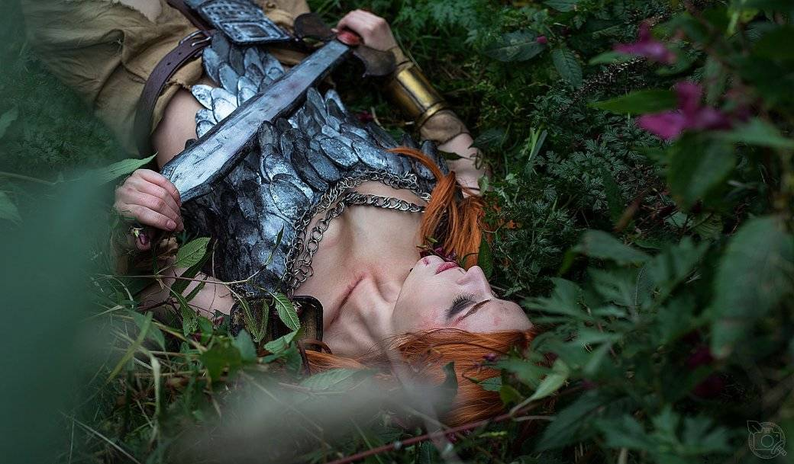
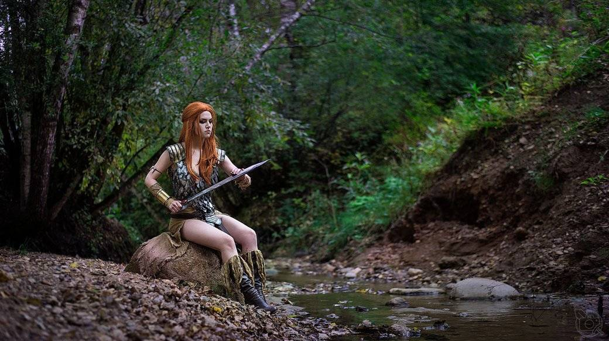
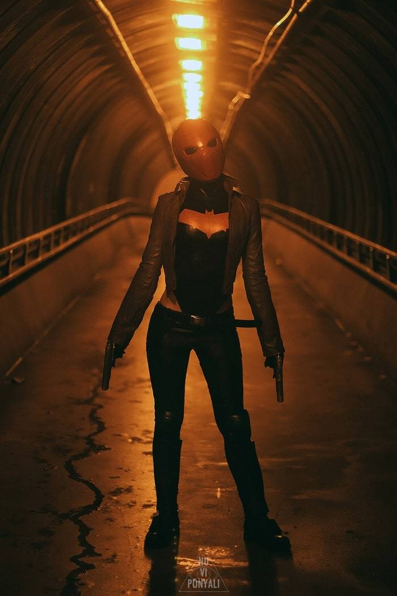
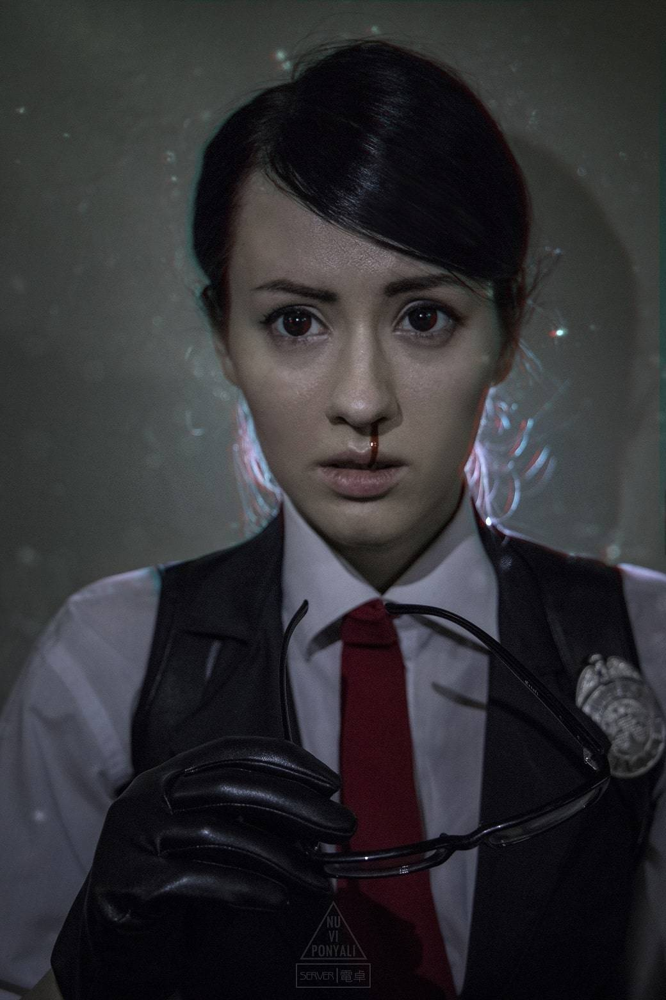

Каждый хотя бы раз задумывался о том, чтобы примерить на себя образ любимого персонажа. Если вы хотели попробовать сшить костюм героя книги или игры, смастерить броню и оружие, но не знали, с чего начать, то наш материал может вам пригодиться. Мы расспросили нескольких косплееров, с какой стороны подходить к этому нелегкому делу, что искать и на что ориентироваться.
Александра Реил (Reilin)
Представьте, что я захотел стать косплеером — простой парень, который не умеет ни шить, ни рисовать, ни клеить. Что нужно освоить в первую очередь?
Это очень сложно для меня упорядочить. Потому что я пришла в косплей уже с определенными навыками — я в это время училась в художественном институте и обучение наделило навыками макетирования, рисования и материаловедения (тогда я узнала о полезных материалах типа ПВХ, оргстекла и прочих, а также где их можно взять). Все это пригодилось мне в дальнейшем. Возможно, начать стоит, изучая статьи и постепенно пробуя себя в разном. Я начинала всегда с малого.
Где можно этому научиться? Курсы кройки и шитья или есть какие-то самоучители, статьи или что-то в этом духе?
Как я уже сказала, есть целые группы со статьями, как и из чего делать. Можно, конечно, и на курсы пойти — это никогда не повредит.
А еще можно писать понравившимся косплеерам и спрашивать о конкретных деталях, которые хотите создать. Часто они сами делают статьи с описаниям своих костюмов.
Так что выбор, с чего начать и как — велик!
Где лучше брать материалы? Какие основные материалы используются для создания костюмов?
Выбор материалов теперь уже велик, есть множество интернет-магазинов, все познается на практике, так что тут надо пробовать. Лично я для себя определила, что мне удобны ЕВА и ПВХ.
Как создать иллюзию металла/кости/редких материалов?
Это большая тема, которая требует отдельной статьи. Я бы не стала здесь это все расписывать, потому что все зависит опять же от выбранного вами материала и эффекта, который вы хотите получить.
Обязательно ли шить все с нуля или какие-то элементы можно покупать уже готовыми?
Я вообще люблю перешивать вещи и часто делаю выкройки костюмов по старым вещам. Тут зависит от вашего навыка пошива. Если вы мастер, то, конечно, вам проще с нуля, но я училась сама и на своем опыте.
От чего отталкиваться при выборе образа? От его популярности, хайпа или личных предпочтений?
Я отталкиваюсь только от своих предпочтений — мне надо любить и понимать персонажа, чтобы начать его делать. Ведь косплей для меня — долгий процесс, и если персонаж тебе не совсем интересен, то наверняка через время интерес пропадет. Есть, конечно, и у меня проекты, которые я делала на заказ к конвенту или по заказу подписчика, но это все очень индивидуально.
Костюм готов, на фотографиях пара десятков лайков есть — что дальше? Как попасть на фестивали/конвенты?
На конвенты можно попасть и без лайков! Смотря какой фестиваль и насколько сильно ваше желание. Есть небольшие мероприятия, которым достаточно вашей диванной фотки и описания выступления — и вы уже участник, есть большие, престижные, где вы пальцы ломать будете в ожидании, возьмут вас или нет.
У каждого конвента обычно есть группа и сайт, где можно найти интересующую вас информацию о том, как стать участником.
Можно и по-простому — купить билет, прийти в костюме и быть счастливым. Все зависит от вас самих.
Александр Вольф
Представьте, что я захотел стать косплеером — простой парень, который не умеет ни шить, ни рисовать, ни клеить. Что нужно освоить в первую очередь?
В первую очередь надо понять, что вы хотите от этого получить и что вам нравится. Расписать свои пожелания. Прикинуть, что из этого и каким образом можно изготовить. Тогда будет понятно, какие навыки наиболее востребованы.
Где можно этому научиться? Курсы кройки и шитья или есть какие-то самоучители, статьи или что-то в этом духе?
Есть много туториалов по всевозможным видам творчества на YouTube и статей на различных сайтах. По пошиву я ничего сказать не могу, я только немного учусь кроить по статьям в интернете. Крафту я учился по видеоурокам и с помощью друзей. Кожу учился делать у одного отличного кожевника, а также пробовал некоторые моменты сам интуитивно. Вопрос очень общий, а ответ часто зависит от того, как больше привык обучаться тот, кто интересуется тем или иным направлением.
Где лучше брать материалы? Какие основные материалы используются для создания костюмов?
Самые разные — все зависит лишь от вашей фантазии и инженерных навыков.
Для многих главными материалами являются EVA-пена и термопластик. Я лично отдаю предпочтение натуральным материалам, когда это возможно, так что зачастую использую кожу (делаю сам) и металл (заказываю у друзей в кузнице). Есть много тонкостей и своеобразных ситуативных материалов.
Например, для костюма Антимага из Dota 2 я делал клинки из оргстекла, на ходу обучаясь тонкостям работы опытным путем.
Некоторые используют силикон и ряд других материалов — зависит от задачи. Насчет «где брать» — смотря что. Кожу, например, лучше брать на кожевенных базах, в Питере такая есть на Ломаной линии около метро «Московские ворота». EVA и термопластик я беру в компании ICS-materials. А так: Google в помощь!
1/3
2/3

3/3
Как создать иллюзию металла/кости/редких материалов?
Как я уже говорил, чаще всего я стараюсь делать не иллюзию, а настоящий материал, если это возможно. Но если требуется иллюзия, часто используют текстурирование и сложные технологии покраски. Здесь я не профи и советовать ничего не возьмусь!
Обязательно ли шить все с нуля или какие-то элементы можно покупать уже готовыми?
Нет никаких четких границ — все зависит от предложений на рынке. Если образ очень известный, чаще всего мастера быстро начинают делать готовые элементы или даже целые костюмы на продажу. Как правило, я нахожу оптимальный компромисс, чтобы не тратить ни чрезмерно много денег, ни перебарщивать с усилиями там, где можно приобрести готовую заготовку или отдельную деталь.
Зависит от ваших ресурсов по времени и финансам.
От чего отталкиваться при выборе образа? От его популярности, хайпа или личных предпочтений?
А это уже смотря чего вы хотите достичь. Я и здесь ищу компромиссы, так как делать неактуальных персонажей — значит получать мало фидбэка, а делать не твоих любимых персонажей глупо, ведь это не доставит позитивных эмоций, а скорее напротив. Делайте то, что нравится. Если хотите внимания, ищите, что нравится из популярного.
И если пытаетесь в хайп, то старайтесь предвосхищать волны внимания и делать немного заранее.
Костюм готов, на фотографиях пара десятков лайков есть — что дальше? Как попасть на фестивали/конвенты?
Берете браузер, заходите в соцсети, ищете ближайший конвент, на который готовы поехать (ПРОДУМАЙТЕ ТРАНСПОРТИРОВКУ КОСТЮМА, если едете в другой город!!!), после этого ищете условия участия в конкурсе или просто дефиле, внимательно изучаете, подаете заявку.
Если ваш образ сделан качественно, вас берут.
Удачи вам!
Maria Hanna
Представьте, что я захотел стать косплеером — простой парень, который не умеет ни шить, ни рисовать, ни клеить. Что нужно освоить в первую очередь?
Выбрать то, к чему душа лежит: крафт, грим, работа с кожей, пошив, работа с латексом и т. д.
Нельзя объять необъятное сразу — можно обратиться к профессионалам.
Или посмотреть гайды в интернете. Тут уж было бы желание!
Где можно этому научиться? Курсы кройки и шитья или есть какие-то самоучители, статьи или что-то в этом духе?
Смотри предыдущий ответ!
Где лучше брать материалы? Какие основные материалы используются для создания костюмов?
Во многих косплей-сообществах есть полезные ссылки по поиску материалов. Опять же — кому что нравится. Я даже из картона как-то видела очень неплохую броню.
Как создать иллюзию металла/кости/редких материалов?
Сочетанием множества цветов в процессе покраски. Есть гайды и на эту тему.
Обязательно ли шить все с нуля или какие-то элементы можно покупать уже готовыми?
По желанию. Я вот люблю максимально усложнить себе жизнь!
От чего отталкиваться при выборе образа? От его популярности, хайпа или личных предпочтений?
Зависит от ваших целей. Хотите хайпа — делайте популярное.
Костюм готов, на фотографиях пара десятков лайков есть — что дальше? Как попасть на фестивали/конвенты?
Подать заявку на конвент, познакомиться там с коллегами-косплеерами, кайфовать от своего образа и общения с ними!
Святослав Любимов (Kensatsu-kan)
VK | Паблик косбэнда | Instagram
Представьте, что я захотел стать косплеером — простой парень, который не умеет ни шить, ни рисовать, ни клеить. Что нужно освоить в первую очередь?
На самом деле, косплеер хотя бы в общих чертах должен уметь это все. Сейчас огромное количество туториалов на YouTube по обработке материалов, шитью и прочему крафту. Главное иметь желание начать. Также можно спросить у косплееров какие-то моменты. Конечно, я не призываю написывать в личку каждому косплееру с вопросами, каким клеем приклеивать ЕВА к ткани. Но постепенно можно узнать разные хитрости в группах, где сидят косплееры или на соответствующих форумах или в тех же самых видео на YouTube.
Где лучше брать материалы? Какие основные материалы используются для создания костюмов?
По поводу материалов: тут все на что хватит вашей фантазии. Я слышал о парне с севера российской глубинки, который сделал полный костюм Бэтмена из покрышек.
Я не представляю, как в нем жарко и насколько он тяжелый, но выглядит он потрясно. Если не знать, что он из покрышек — никогда не догадаешься. Раньше многие делали части костюмов из линолеума, например.
Сейчас же такие материалы как ЕВА-пенка, ПВХ, ворбла, бабл-стар стали куда более доступными, что в принципе открывает простор для любого в косплее. А что уж говорить о массовом внедрении 3D-печати. Уже не редкость, когда косплеер полностью печатает себе костюм на принтере.
Как создать иллюзию металла/кости/редких материалов?
По поводу тонкостей и создания иллюзий — я не тот, у кого стоит подобное узнавать. Не считаю себя крафтером. Знаю, что грамотной покраской можно добиться любого эффекта, и из куска пенопласта сделать, к примеру, металлическую наковальню так, что с метра не отличить от куска металла.
Например я, для косплея Вернона Роше, чтобы сделать максимально визуально-правильный метал решил…сделать все из металла!
Поэтому кольчуга, поножи, налокотники и двуручный меч у меня металлические. В этом не было острой необходимости, но мне просто так захотелось.
Обязательно ли шить все с нуля или какие-то элементы можно покупать уже готовыми?
По поводу шитья: у меня есть косплей Карателя, и, к примеру, у него в костюме есть такие элементы, как армейские штаны, берцы, тактические перчатки. Нет никакого смысла шить их с нуля, когда все это есть в ближайшем военторге. А вот, например, плащ для Карателя сложно найти нужной длины, цвета и плотности кожи — его лучше сшить. Другими словами, нужно отталкиваться от конкретного образа.
От чего отталкиваться при выборе образа? От его популярности, хайпа или личных предпочтений?
Мой совет: в первую очередь отталкивайтесь от своих личных предпочтений. Хайп — это, конечно, весело и сделать актуальный костюм к примеру, к дате релиза игры — очень круто, но я все же считаю, что во главе угла должны стоять личные предпочтения и любовь к персонажу.
Ведь для меня косплей — это высшая степень проявления любви к герою, вселенной и самому художественному произведению.
Конечно, найдутся косплееры, которые со мной не согласятся, но это мое мнение. Наверно, поэтому 90% моих костюмов по уже неактуальным источникам. Но в 2019 году я планирую исправить эту ситуацию!
Костюм готов, на фотографиях пара десятков лайков есть — что дальше? Как попасть на фестивали/конвенты?
Зачастую порядок другой, сперва фестиваль, а уже потом фотосессии. По крайней мере, у меня так.
Нужно чтобы ваш костюм был готов к дате подачи заявок — о них можно узнать в группах фестивалей. Нужно сфотографироваться (можно даже на тапок) в костюме и послать его организаторам фестиваля по электронной почте с заполненной формой. И если они сочтут ваш косплей достаточно хорошим — вас позовут на конкурс.
Но никто не запрещает вам прийти гостевым косплеером, а именно купить билет как остальные посетители и прийти в костюме. На некоторых фестивалях даже есть отдельные дефиле для гостевых косплееров, так что в этом случае даже будет возможность попасть на сцену.
Как я уже говорил, главное — желание!
Старайтесь, творите, создавайте и все у вас получится!
Бастиан Пикадилли (elysian.rebel)
Представьте, что я захотел стать косплеером — простой парень, который не умеет ни шить, ни рисовать, ни клеить. Что нужно освоить в первую очередь?
В первую очередь нужно запастись терпением. Всепоглощающим и всеобъемлющим. Ну, а дальше, наверно, нужно найти какой-то костюм, который бы тебе нравился, но все же не был адски сложным и… Глаза боятся, а руки делают. Ну, или пробуют делать.
Вообще, на мой взгляд, крафтить в разы легче чем шить, но это уж кому как. Может у вас талант к ровным строчкам и аккуратным внутренним швам, а я вам тут про ворблу рассказывать буду? Словом, надо пробовать.
Где можно этому научиться? Курсы кройки и шитья или есть какие-то самоучители, статьи или что-то в этом духе?
Опытным путем и через YouTube. Это то, как это делала я и делаю до сих пор.
Еще некоторые крутые косплееры типа Kamui выпускают книги с пособиями, инструкциями и прочими лайфхаками — тоже, наверно, полезное приобретение для новичка.
Где лучше брать материалы? Какие основные материалы используются для создания костюмов?
Я предпочитаю заказывать через Интернет ЕВА и бабблстар. А всякие трубы, древки и прочую мелкую радость вам всегда с радостью продадут на рынке.
Как создать иллюзию металла/кости/редких материалов?
Все-то вам расскажи… Есть масса способов.
Ключ в правильно подобранном материале и умелой покраске.
1/3

2/3
3/3
Обязательно ли шить все с нуля или какие-то элементы можно покупать уже готовыми?
Вообще необязательно. Можно хоть полностью заказать костюм — я не вижу в этом ничего зазорного. Может, у вас банально нет времени сидеть и расшивать кафтан Ольгерда фон Эверека, а примерить на себя образ атамана ну очень хочется. И что, отказываться теперь от мечты?
От чего отталкиваться при выборе образа? От его популярности, хайпа или личных предпочтений?
Смотря какую цель вы преследуете. Но для себя я четко поняла, что делать персонажа, который мне не сильно интересен, смысла нет: у меня банально не хватает запала.
Но в то же время, нежно любимые, но жутко редкие персонажи, вряд ли разлетятся по сети. Хотя, опять же, никогда не знаешь.
Костюм готов, на фотографиях пара десятков лайков есть — что дальше? Как попасть на фестивали/конвенты?
Купить билет? Это всегда опция, здесь нет ничего сложного. Другое дело, если вы хотите получить аккредитацию. Тут надо внимательно читать условия каждого фестиваля, у всех свои требования. А фестивалей существует великое множество, так что дерзайте!
Ониксия Софиникум
Представьте, что я захотел стать косплеером — простой парень, который не умеет ни шить, ни рисовать, ни клеить. Что нужно освоить в первую очередь?
Освоить нужно все. Косплееры которые занимаются этим не первый год и вправду становятся мастерами на все руки.
Или при наличии денег и отсутствии умелых рук — заказывать у мастеров.
Где можно этому научиться? Курсы кройки и шитья или есть какие-то самоучители, статьи или что-то в этом духе?
Туториалы, книги, статьи, советы других вам в помощь.
Где лучше брать материалы? Какие основные материалы используются для создания костюмов?
Те, которые лучше подойдут. Этот вопрос звучит как «Какие ингредиенты брать для приготовления блюда?»…
Как создать иллюзию металла/кости/редких материалов?
Это уже дело техники. Максимально подогнать по внешней фактуре и покраске с оттенением.
Вообще во многих аспектах — покраска играет оооочень большую роль.
Обязательно ли шить все с нуля или какие-то элементы можно покупать уже готовыми?
Опять же, если костюм изначально это предполагает, то да.
1/3

2/3
3/3
От чего отталкиваться при выборе образа? От его популярности, хайпа или личных предпочтений?
Тут каждый выбирает для себя сам.
Костюм готов, на фотографиях пара десятков лайков есть — что дальше? Как попасть на фестивали/конвенты?
Подавать заявки в конкурс или аккредитацию.